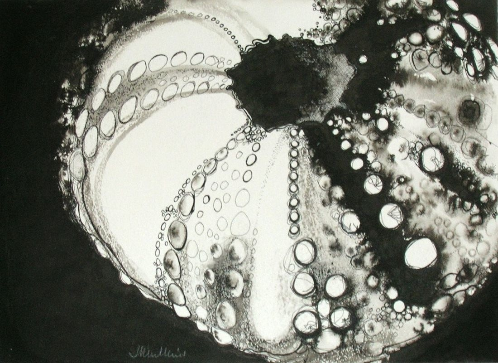
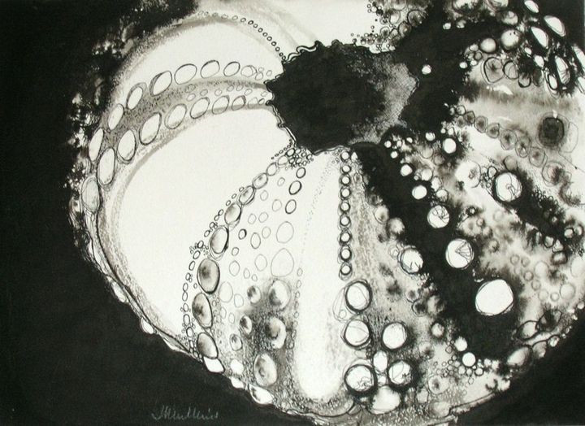

Black Sea Urchin
No. 21- Medium
- Ink on paper
- Size
- 34 × 25 cm
- Year
- 1980s
- Price
- Not for sale
[A few lines from Joan about this painting]

[A few lines from Joan about this painting]

Drawn to scale: the painting is 34 × 25 cm, above a sideboard 110 cm wide and 80 cm high.
 Shells with magenta wash
Shells with magenta wash Shell study in brown and blue
Shell study in brown and blue Shell study on dark background
Shell study on dark background